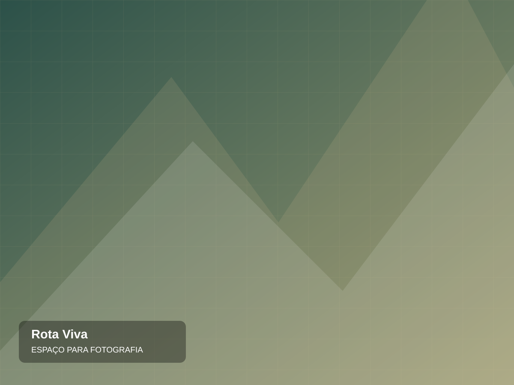

EXPLORE ALÉM DO ÓBVIO — DEMO DE AGÊNCIAO mundo é
O mundo é
grande demais
para ficar parado.
Experiências desenhadas para pessoas que preferem colecionar histórias. Descubra novos caminhos e monte sua próxima viagem.
01 / 03VIAGENS ILUSTRATIVAS · DISPONIBILIDADE SOB CONSULTAROLE PARA EXPLORAR ↓
O MELHOR DESTINO
É aquele que faz sentido para você.
Na Rota Viva, cada viagem começa com uma conversa. Os roteiros abaixo são exemplos de apresentação e não representam pacotes vendidos.
CURADORIA DE EXPERIÊNCIAS
Roteiros para sentir.
O JEITO ROTA VIVA
Não colecione pontos no mapa. Colecione momentos.
Um roteiro incrível respeita seu tempo, sua curiosidade e o estilo de viagem que você gosta de viver.
01. Viagens feitas sob consulta
02. Experiências em vez de pacotes genéricos
03. Atendimento direto e personalizado
SUA HISTÓRIA, SUA ROTAVamos construir
Vamos construir
sua próxima aventura?
Preencha suas preferências e envie uma solicitação. Um consultor precisaria confirmar opções, documentação e valores em uma versão real.